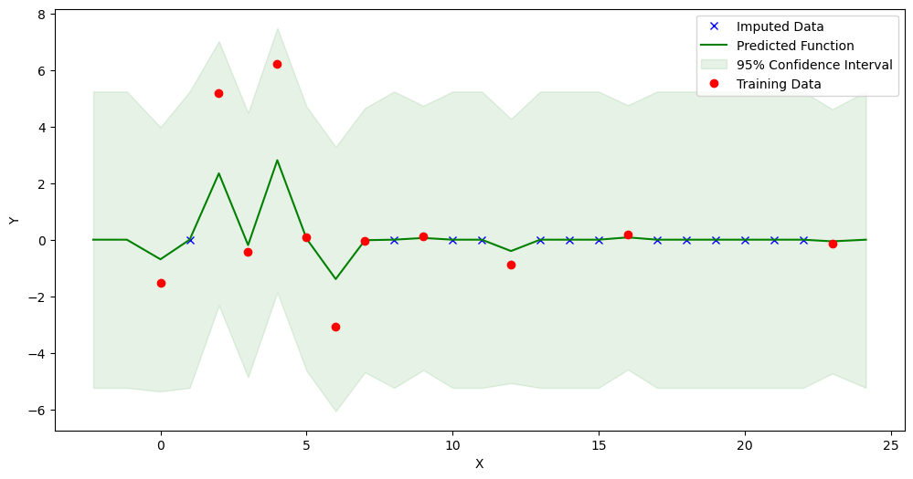
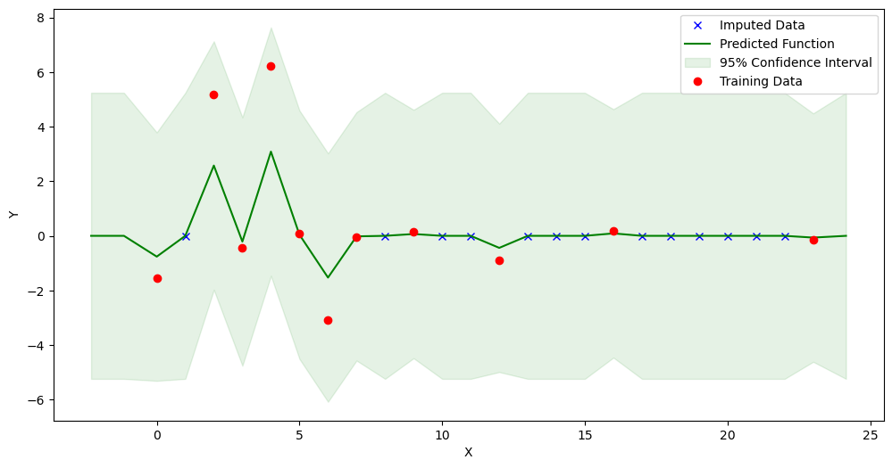
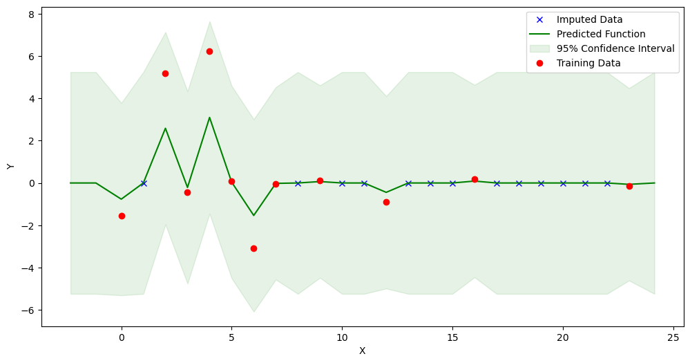
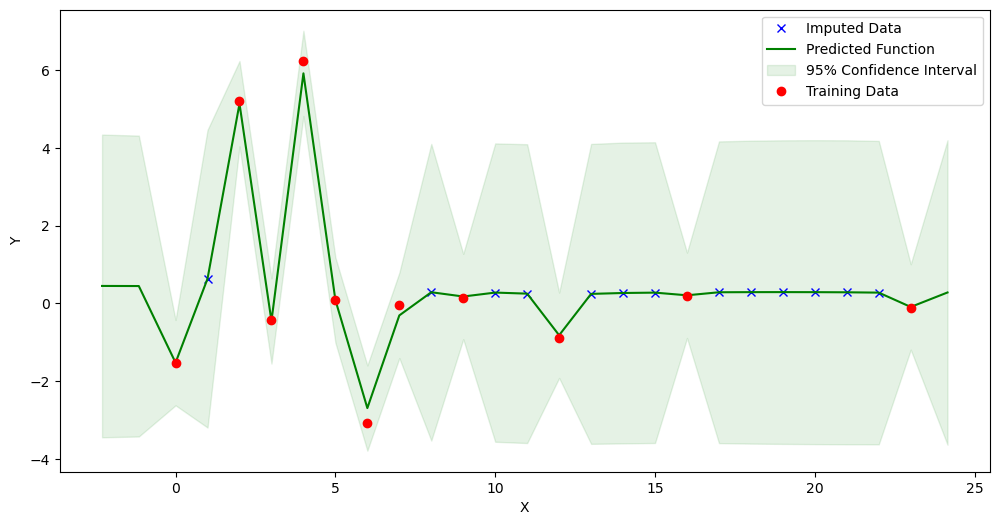

Using the Data Imputator on a Real Public Dataset - Stein et al. (2013)¶
[1]:
import numpy as np
import pandas as pd
from mimic.data_imputation.impute_GP import GPImputer
WARNING:tensorflow:From c:\ProgramData\anaconda3\envs\MIMIC\Lib\site-packages\tf_keras\src\losses.py:2976: The name tf.losses.sparse_softmax_cross_entropy is deprecated. Please use tf.compat.v1.losses.sparse_softmax_cross_entropy instead.
WARNING:tensorflow:From c:\ProgramData\anaconda3\envs\MIMIC\Lib\site-packages\tensorflow_probability\python\internal\backend\numpy\_utils.py:48: The name tf.logging.TaskLevelStatusMessage is deprecated. Please use tf.compat.v1.logging.TaskLevelStatusMessage instead.
WARNING:tensorflow:From c:\ProgramData\anaconda3\envs\MIMIC\Lib\site-packages\tensorflow_probability\python\internal\backend\numpy\_utils.py:48: The name tf.control_flow_v2_enabled is deprecated. Please use tf.compat.v1.control_flow_v2_enabled instead.
[2]:
data = pd.read_csv('Stein_example_F.csv')
[3]:
# Dictionary to hold DataFrames for each unique ID
sample_dfs = {}
for sample_id in data['ID'].unique():
# Filter data for each sample ID
sample_data = data[data['ID'] == sample_id].copy()
# Shift time points to start from 0
sample_data['time'] = sample_data['time'] - sample_data['time'].min()
# Store DataFrame in dictionary
sample_dfs[sample_id] = sample_data
# Display a sample DataFrame for verification
sample_dfs[1].head(20) # Display the DataFrame for sample ID 1
[3]:
| ID | time | undefined_genus_of_Enterobacteriaceae | Blautia | Barnesiella | undefined_genus_of_unclassified_Mollicutes | undefined_genus_of_Lachnospiraceae | Akkermansia | Clostridium_difficile | unclassified_Lachnospiraceae | Coprobacillus | Enterococcus | Other | |
|---|---|---|---|---|---|---|---|---|---|---|---|---|---|
| 0 | 1 | 0 | 5.25900 | -1.536500 | -3.157200 | -0.72794 | -3.778700 | -2.561400 | 0.0 | -3.033100 | 0.280350 | 2.07960 | -1.65810 |
| 1 | 1 | 2 | -0.73919 | 5.195600 | -0.264510 | 0.42863 | -0.264520 | 5.569500 | 0.0 | -0.264720 | 1.967400 | -0.82412 | -0.44685 |
| 2 | 1 | 3 | 2.50860 | -0.424610 | 2.907600 | 2.17330 | 2.907600 | -1.697600 | 0.0 | 2.907600 | 6.399700 | 4.98700 | 5.10480 |
| 3 | 1 | 4 | -2.47510 | 6.226000 | -1.014700 | -1.01470 | -1.014700 | 3.979200 | 0.0 | -1.014700 | -6.452700 | -2.17780 | -1.54420 |
| 4 | 1 | 5 | -0.58042 | 0.082481 | -0.217980 | -0.21801 | -0.218000 | -0.484480 | 0.0 | -0.217620 | -0.504010 | -2.52060 | -1.99110 |
| 5 | 1 | 6 | -0.52380 | -3.085500 | -1.861500 | 2.85240 | -1.861500 | -0.092136 | 0.0 | -1.862000 | -1.861500 | 1.02880 | -1.57390 |
| 6 | 1 | 7 | 0.59652 | -0.038938 | 0.058401 | 0.81097 | 0.058389 | -3.804400 | 0.0 | 0.058219 | 0.058405 | -1.04020 | 0.69655 |
| 7 | 1 | 9 | 0.07182 | 0.134260 | 0.149210 | 0.21998 | 0.149210 | 0.149210 | 0.0 | 0.149330 | 0.149210 | -0.53718 | -0.18033 |
| 8 | 1 | 12 | -1.29670 | -0.889530 | -0.822160 | -0.61591 | -0.822140 | -0.822150 | 0.0 | -0.822110 | -0.822150 | -0.48064 | -0.40463 |
| 9 | 1 | 16 | 0.21910 | 0.179860 | 0.120090 | 0.11893 | 0.120090 | 0.120090 | 0.0 | 0.120130 | 0.120090 | 0.12009 | 0.13895 |
| 10 | 1 | 23 | -0.34909 | -0.130320 | -0.160040 | -0.13692 | -0.160050 | -0.160040 | 0.0 | -0.160100 | -0.160040 | -0.00309 | -0.18936 |
[4]:
# Process each sample DataFrame to include all time points from 0 to max with NaN for missing rows
for sample_id in sample_dfs:
# Get the maximum time point for the current sample
max_time = sample_dfs[sample_id]['time'].max()
# Create a new index that includes all time points from 0 to max_time
full_time_index = pd.RangeIndex(start=0, stop=max_time + 1, step=1)
# Reindex the DataFrame using the new full time index
sample_dfs[sample_id] = sample_dfs[sample_id].set_index(
'time').reindex(full_time_index).reset_index()
# Fill in the sample ID for new rows which will be NaN after reindexing
sample_dfs[sample_id]['ID'].fillna(sample_id, inplace=True)
# Display the adjusted DataFrame for sample ID 1 to verify the changes
# Display the first 15 rows to see the complete range including NaNs
sample_dfs[1].head(15)
[4]:
| index | ID | undefined_genus_of_Enterobacteriaceae | Blautia | Barnesiella | undefined_genus_of_unclassified_Mollicutes | undefined_genus_of_Lachnospiraceae | Akkermansia | Clostridium_difficile | unclassified_Lachnospiraceae | Coprobacillus | Enterococcus | Other | |
|---|---|---|---|---|---|---|---|---|---|---|---|---|---|
| 0 | 0 | 1.0 | 5.25900 | -1.536500 | -3.157200 | -0.72794 | -3.778700 | -2.561400 | 0.0 | -3.033100 | 0.280350 | 2.07960 | -1.65810 |
| 1 | 1 | 1.0 | NaN | NaN | NaN | NaN | NaN | NaN | NaN | NaN | NaN | NaN | NaN |
| 2 | 2 | 1.0 | -0.73919 | 5.195600 | -0.264510 | 0.42863 | -0.264520 | 5.569500 | 0.0 | -0.264720 | 1.967400 | -0.82412 | -0.44685 |
| 3 | 3 | 1.0 | 2.50860 | -0.424610 | 2.907600 | 2.17330 | 2.907600 | -1.697600 | 0.0 | 2.907600 | 6.399700 | 4.98700 | 5.10480 |
| 4 | 4 | 1.0 | -2.47510 | 6.226000 | -1.014700 | -1.01470 | -1.014700 | 3.979200 | 0.0 | -1.014700 | -6.452700 | -2.17780 | -1.54420 |
| 5 | 5 | 1.0 | -0.58042 | 0.082481 | -0.217980 | -0.21801 | -0.218000 | -0.484480 | 0.0 | -0.217620 | -0.504010 | -2.52060 | -1.99110 |
| 6 | 6 | 1.0 | -0.52380 | -3.085500 | -1.861500 | 2.85240 | -1.861500 | -0.092136 | 0.0 | -1.862000 | -1.861500 | 1.02880 | -1.57390 |
| 7 | 7 | 1.0 | 0.59652 | -0.038938 | 0.058401 | 0.81097 | 0.058389 | -3.804400 | 0.0 | 0.058219 | 0.058405 | -1.04020 | 0.69655 |
| 8 | 8 | 1.0 | NaN | NaN | NaN | NaN | NaN | NaN | NaN | NaN | NaN | NaN | NaN |
| 9 | 9 | 1.0 | 0.07182 | 0.134260 | 0.149210 | 0.21998 | 0.149210 | 0.149210 | 0.0 | 0.149330 | 0.149210 | -0.53718 | -0.18033 |
| 10 | 10 | 1.0 | NaN | NaN | NaN | NaN | NaN | NaN | NaN | NaN | NaN | NaN | NaN |
| 11 | 11 | 1.0 | NaN | NaN | NaN | NaN | NaN | NaN | NaN | NaN | NaN | NaN | NaN |
| 12 | 12 | 1.0 | -1.29670 | -0.889530 | -0.822160 | -0.61591 | -0.822140 | -0.822150 | 0.0 | -0.822110 | -0.822150 | -0.48064 | -0.40463 |
| 13 | 13 | 1.0 | NaN | NaN | NaN | NaN | NaN | NaN | NaN | NaN | NaN | NaN | NaN |
| 14 | 14 | 1.0 | NaN | NaN | NaN | NaN | NaN | NaN | NaN | NaN | NaN | NaN | NaN |
[5]:
data = sample_dfs[1]
data
[5]:
| index | ID | undefined_genus_of_Enterobacteriaceae | Blautia | Barnesiella | undefined_genus_of_unclassified_Mollicutes | undefined_genus_of_Lachnospiraceae | Akkermansia | Clostridium_difficile | unclassified_Lachnospiraceae | Coprobacillus | Enterococcus | Other | |
|---|---|---|---|---|---|---|---|---|---|---|---|---|---|
| 0 | 0 | 1.0 | 5.25900 | -1.536500 | -3.157200 | -0.72794 | -3.778700 | -2.561400 | 0.0 | -3.033100 | 0.280350 | 2.07960 | -1.65810 |
| 1 | 1 | 1.0 | NaN | NaN | NaN | NaN | NaN | NaN | NaN | NaN | NaN | NaN | NaN |
| 2 | 2 | 1.0 | -0.73919 | 5.195600 | -0.264510 | 0.42863 | -0.264520 | 5.569500 | 0.0 | -0.264720 | 1.967400 | -0.82412 | -0.44685 |
| 3 | 3 | 1.0 | 2.50860 | -0.424610 | 2.907600 | 2.17330 | 2.907600 | -1.697600 | 0.0 | 2.907600 | 6.399700 | 4.98700 | 5.10480 |
| 4 | 4 | 1.0 | -2.47510 | 6.226000 | -1.014700 | -1.01470 | -1.014700 | 3.979200 | 0.0 | -1.014700 | -6.452700 | -2.17780 | -1.54420 |
| 5 | 5 | 1.0 | -0.58042 | 0.082481 | -0.217980 | -0.21801 | -0.218000 | -0.484480 | 0.0 | -0.217620 | -0.504010 | -2.52060 | -1.99110 |
| 6 | 6 | 1.0 | -0.52380 | -3.085500 | -1.861500 | 2.85240 | -1.861500 | -0.092136 | 0.0 | -1.862000 | -1.861500 | 1.02880 | -1.57390 |
| 7 | 7 | 1.0 | 0.59652 | -0.038938 | 0.058401 | 0.81097 | 0.058389 | -3.804400 | 0.0 | 0.058219 | 0.058405 | -1.04020 | 0.69655 |
| 8 | 8 | 1.0 | NaN | NaN | NaN | NaN | NaN | NaN | NaN | NaN | NaN | NaN | NaN |
| 9 | 9 | 1.0 | 0.07182 | 0.134260 | 0.149210 | 0.21998 | 0.149210 | 0.149210 | 0.0 | 0.149330 | 0.149210 | -0.53718 | -0.18033 |
| 10 | 10 | 1.0 | NaN | NaN | NaN | NaN | NaN | NaN | NaN | NaN | NaN | NaN | NaN |
| 11 | 11 | 1.0 | NaN | NaN | NaN | NaN | NaN | NaN | NaN | NaN | NaN | NaN | NaN |
| 12 | 12 | 1.0 | -1.29670 | -0.889530 | -0.822160 | -0.61591 | -0.822140 | -0.822150 | 0.0 | -0.822110 | -0.822150 | -0.48064 | -0.40463 |
| 13 | 13 | 1.0 | NaN | NaN | NaN | NaN | NaN | NaN | NaN | NaN | NaN | NaN | NaN |
| 14 | 14 | 1.0 | NaN | NaN | NaN | NaN | NaN | NaN | NaN | NaN | NaN | NaN | NaN |
| 15 | 15 | 1.0 | NaN | NaN | NaN | NaN | NaN | NaN | NaN | NaN | NaN | NaN | NaN |
| 16 | 16 | 1.0 | 0.21910 | 0.179860 | 0.120090 | 0.11893 | 0.120090 | 0.120090 | 0.0 | 0.120130 | 0.120090 | 0.12009 | 0.13895 |
| 17 | 17 | 1.0 | NaN | NaN | NaN | NaN | NaN | NaN | NaN | NaN | NaN | NaN | NaN |
| 18 | 18 | 1.0 | NaN | NaN | NaN | NaN | NaN | NaN | NaN | NaN | NaN | NaN | NaN |
| 19 | 19 | 1.0 | NaN | NaN | NaN | NaN | NaN | NaN | NaN | NaN | NaN | NaN | NaN |
| 20 | 20 | 1.0 | NaN | NaN | NaN | NaN | NaN | NaN | NaN | NaN | NaN | NaN | NaN |
| 21 | 21 | 1.0 | NaN | NaN | NaN | NaN | NaN | NaN | NaN | NaN | NaN | NaN | NaN |
| 22 | 22 | 1.0 | NaN | NaN | NaN | NaN | NaN | NaN | NaN | NaN | NaN | NaN | NaN |
| 23 | 23 | 1.0 | -0.34909 | -0.130320 | -0.160040 | -0.13692 | -0.160050 | -0.160040 | 0.0 | -0.160100 | -0.160040 | -0.00309 | -0.18936 |
[6]:
data['Blautia'].isnull()
[6]:
0 False
1 True
2 False
3 False
4 False
5 False
6 False
7 False
8 True
9 False
10 True
11 True
12 False
13 True
14 True
15 True
16 False
17 True
18 True
19 True
20 True
21 True
22 True
23 False
Name: Blautia, dtype: bool
[7]:
data['index'] = data['index'].astype(float)
new_dataset = GPImputer().impute_missing_values(
data, ['index'], ['Blautia'], 'Blautia')
# This is the last version of the imputed data
Model: GPR
Best kernel: <class 'gpflow.kernels.stationaries.RationalQuadratic'>
BIC: -43.268296620070025

[8]:
new_dataset2 = GPImputer().impute_missing_values(
data, ['index'], ['Blautia'], 'Blautia', kernel='RBF')
Model: GPR
Best kernel: <class 'gpflow.kernels.stationaries.SquaredExponential'>
BIC: -45.666191640980635

[9]:
new_dataset3 = GPImputer().impute_missing_values(
data, ['index'], ['Blautia'], 'Blautia', kernel='M32')
Model: GPR
Best kernel: <class 'gpflow.kernels.stationaries.Matern32'>
BIC: -45.66619187189501
[10]:
new_dataset3 = GPImputer().impute_missing_values(
data, ['index'], ['Blautia'], 'Blautia', kernel='M52')
Model: GPR
Best kernel: <class 'gpflow.kernels.stationaries.Matern52'>
BIC: -45.666191854136706

[11]:
data.columns
[11]:
Index(['index', 'ID', 'undefined_genus_of_Enterobacteriaceae', 'Blautia',
'Barnesiella', 'undefined_genus_of_unclassified_Mollicutes',
'undefined_genus_of_Lachnospiraceae', 'Akkermansia',
'Clostridium_difficile', 'unclassified_Lachnospiraceae',
'Coprobacillus', 'Enterococcus', 'Other'],
dtype='object')
[12]:
new_dataset3 = GPImputer().impute_missing_values(
data, ['index'], ['Blautia', 'Barnesiella', 'Akkermansia'], 'Blautia')
Model: VGP
Best kernel: <class 'gpflow.kernels.stationaries.RationalQuadratic'>
BIC: 7642.923909330112
